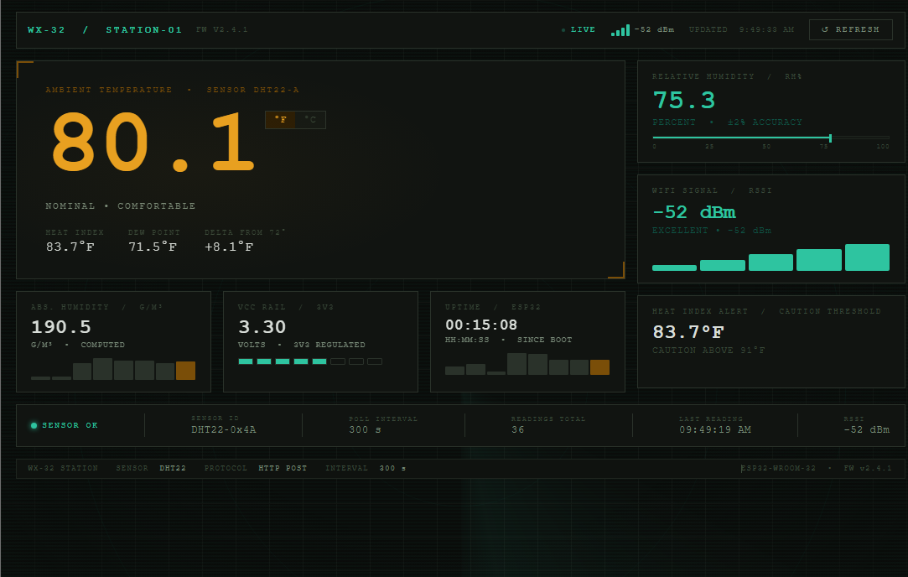

ESP32 Wi-Fi Weather Station
Making sensor data useful beyond the serial monitor.
ESP32 firmware samples a DHT22, computes environmental readings and device diagnostics, then sends structured telemetry over Wi-Fi to a Flask API. SQLite persists each reading and a browser dashboard presents current conditions, trends, and error states.
- Edge
- C++ firmware handles sampling, derived values, Wi-Fi state, and JSON payloads.
- Service
- Separate Flask routes receive telemetry, query history, and serve the latest reading.
- Interface
- The dashboard aligns its refresh interval with the sensor polling loop and reports connection failures.
ESP32 · C++ · DHT22 · Wi-Fi · Flask · SQLite · JavaScript
View repository